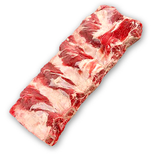

<!DOCTYPE html>
<html lang="ru">

<head>
  <meta charset="UTF-8">
  <title>Интерактивная карта</title>
  <meta name="description" content="">
  <meta name="keywords" content=" ">
  <link rel="icon" type="image/x-icon" href="/img/favicon.ico">
  <meta http-equiv="X-UA-Compatible" content="IE=edge">
  <link rel="stylesheet" href="css/style.css">
</head>

<body>

  <div class="map">

    <svg class="cow-parts" viewBox="0 0 1140 800">
      <a href="#">
        <path class="part" fill="#bf2523"
          d="m 457.42574,98.019802 116.83169,9.405938 c 42.85198,52.66853 57.13369,134.6399 48.51485,240.09901 l -137.62376,4.9505 C 497.32396,261.5378 491.405,175.77019 457.42574,98.019802 Z"
          data-description=" Реберная часть (толстый край) - первосортное мясо, в цельном виде состоит из 13 ребер" />
      </a>
      <a href="#">
        <path class="part" fill="#bf2523"
          d="m 574.25743,107.42574 c 46.20462,1.71749 92.40924,9.53729 138.61386,0.49505 56.34773,63.10308 58.73177,149.89753 62.37624,236.13862 -51.93587,1.15511 -101.71068,2.31023 -152.47525,3.46534 10.0484,-105.59752 -5.75849,-185.98613 -48.51485,-240.09901 z"
          data-description=" Филей (поясничная часть, тонкий край). Этот отруб содержит нежное и очень постное мясо" />
      </a>
    </svg>

    <div class="description"></div>

    

  </div>

  <!--[if lt IE 9]>
	<script src="libs/html5shiv/es5-shim.min.js"></script>
	<script src="libs/html5shiv/html5shiv.min.js"></script>
	<script src="libs/html5shiv/html5shiv-printshiv.min.js"></script>
	<script src="libs/respond/respond.min.js"></script>
<![endif]-->
  <script src="js/jquery-3.4.1.min.js"></script>
  <script src="js/main.js"></script>
</body>

</html>